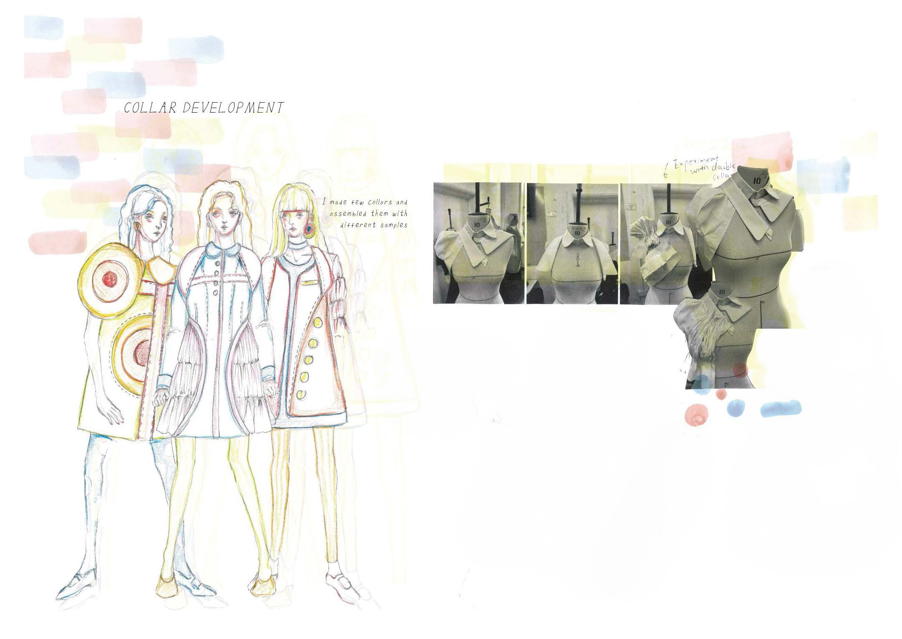
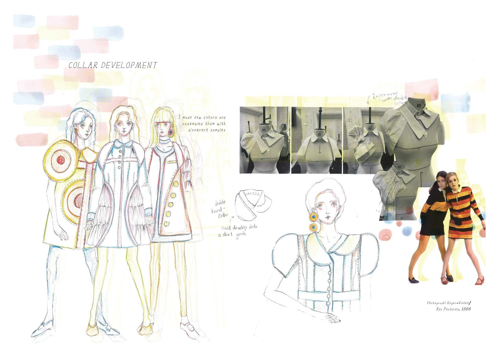
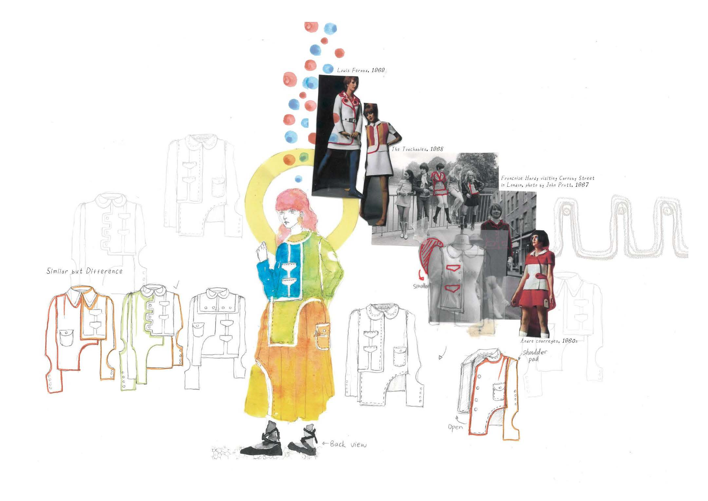
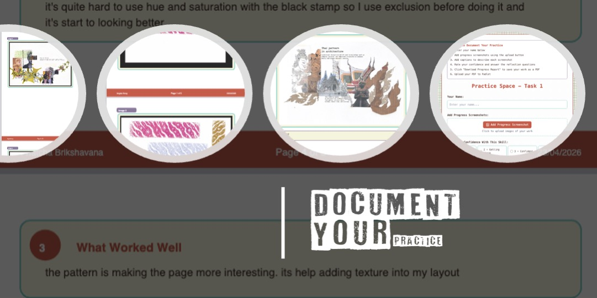

Show where your design ideas came from.
Add research links, then use graphic elements to guide the eye.
Add research links with references.
Add graphic elements for visual flow.
Document and reflect.
The images that inspired each design
Drawings next to stand work
Collars, cuffs, fastenings, seams, silhouettes
Several directions — not just one


You should have:
Not done? Take 5 minutes now. Choose your page.
Lines from your drawings that connect images and guide the eye.
Bold high-contrast shapes, cut textures, custom marks.
Make key details big. Use colour to link elements.
Add research images to your design development page.
Every design should connect to a piece of research.
Find sources · 10 min → Place images · 20 min → Add references · 15 min
research → design idea → development
Without research links, the examiner cannot see this journey.

The viewer can trace each design back to its research.
Artist's Last Name, First Initial. (Year). Title of the work [Medium].
Put each reference near its image, small (9–10pt).
File › Open → your scanned design development page.
On paper? Scan it first at 300 DPI.
Look at each design. Ask:
Look in your research pages or research folder.
Add each image as a new layer: File › Place Embedded…
Smaller than your designs — they are evidence
Next to the design they inspired
Keep related research and designs together
Save: File › Export › Export As… → JPG. Take a screenshot.
Choose ONE technique.
Use it to guide the eye and connect research to designs.
Choose & review tutorial · 15 min → Make graphic elements · 40 min → Apply & refine · 20 min
Best for: links between elements, guiding the eye.
Best for: bold marks, high contrast, textures.
Best for: emphasis, colour to connect elements.
Open your tutorial. Watch the video. Read the steps before you start.
Follow the tutorial, e.g.:
📸 Take screenshots as you work — you need them for the report.
Link research to designs
Guide the eye across the page
Do not overcrowd — leave space
Every element needs a reason
Ask:
Show how you learned today.
Use the Progress Tool. It makes a PDF.
Your teacher sees how you worked, not only the final page.
Your reflection is part of your assessment.

The tool puts your screenshots and reflections into one PDF.
It opens in a new tab. Keep this page open too.
Take a screenshot: Mac Cmd + Shift + 4 · Windows Win + Shift + S
Be specific: "I struggled with the Pen Tool curves" is better than "It was hard".
Upload all three tasks to Padlet.
Page with research links and references
Page with graphic elements
Your PDF
Show where ideas came from
Harvard style for every image
Graphic elements guide the eye
Challenges and learning
Look at your portfolio. Find any other pages that need work.